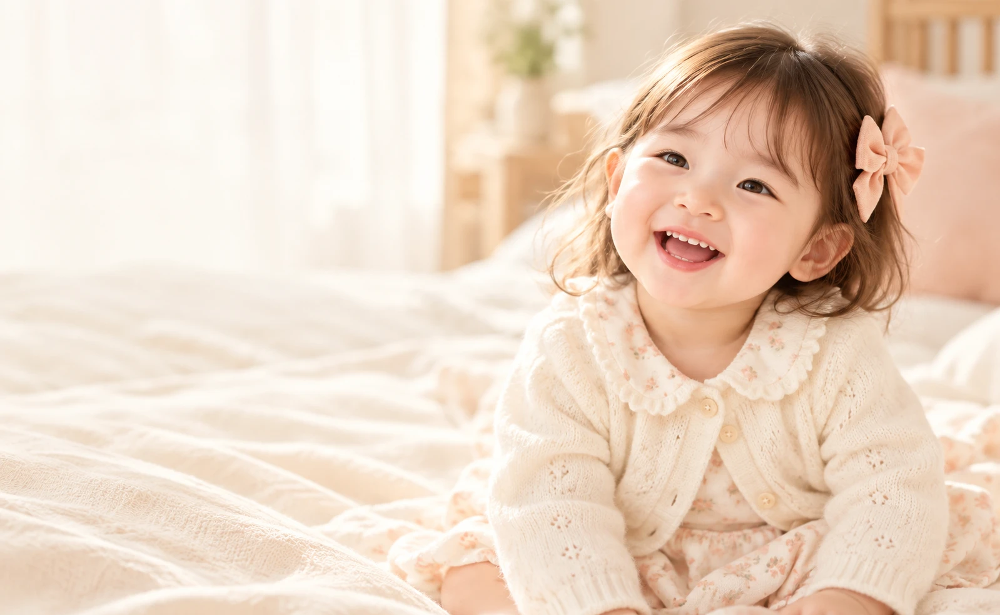
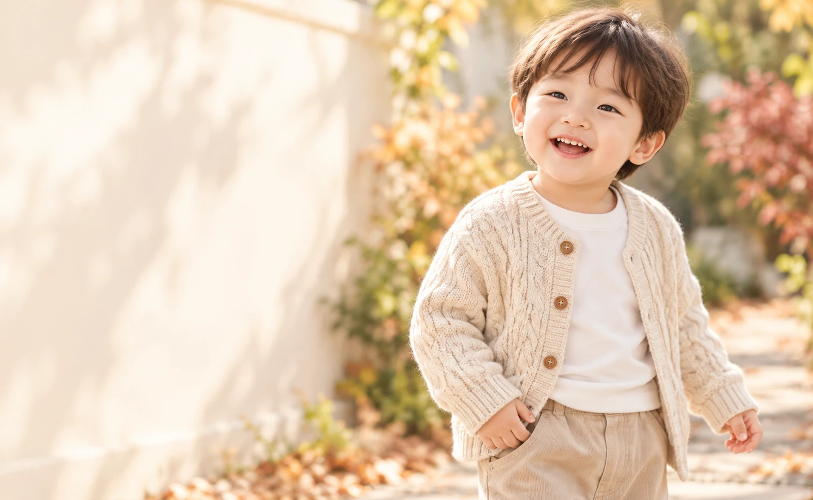

히어로 사진 시안
한국인 아이를 표현한 AI 생성 시안입니다. 아직 홈 화면에는 적용하지 않았습니다.
아래 번호로 선택해 주세요. 문구와 버튼은 실제 화면에서 별도로 배치합니다.



홈 히어로 선택
한국인 아이를 표현한 AI 생성 시안입니다. 아직 홈 화면에는 적용하지 않았습니다.
아래 번호로 선택해 주세요. 문구와 버튼은 실제 화면에서 별도로 배치합니다.

